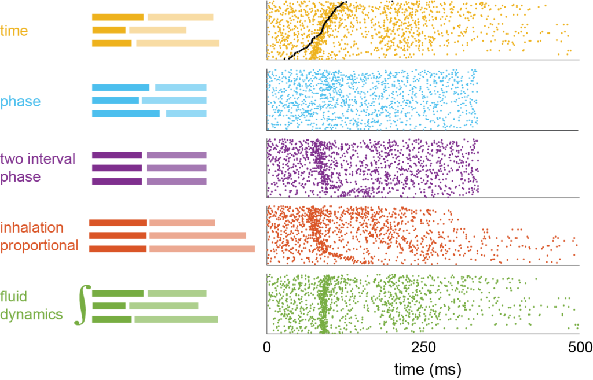

Coding of perceived odor intensity
One of the aims of systems neuroscience is to link neural activity in different stages
of brain processing with specific sensations or percepts. This has been accomplished
for our senses of touch and vision, but not for our sense of smell, or olfaction. To
better understand olfaction, we started with a basic sensation common to many sensory
systems: intensity. Based on prior work, we knew that mammals (rats and humans) compare
quantities (concentrations) of different odors based on their perceived intensity.
Previous work showed that neuronal activity in different parts of the brain (the piriform
cortex, entorhinal cortex, and amygdala) correlates with odor concentration. However,
this is not enough evidence for consistency with perception. In rats and humans, the
perceived intensity of odors grows systematically with their concentration but rapidly
decreases after prolonged sampling (or sniffing) due to adaptation. Thus, perceived
intensity for a given odor is a function of at least two variables: the physical
concentration of an odor outside the nose and the sampling duration. Therefore, in order
for a neuronal response to represent intensity, it must change consistently with
concentration and adaptation.
We hypothesized that a neural representation, or code, for odor intensity may already
exist in the activity patterns of mitral and tufted cells (MTC) in the olfactory bulb.
To test this hypothesis, we characterized changes in electrophysiological activity of
MTCs as a function of odor concentration and adaptation and examined them for consistency
erception. MTCs respond to odors not only by changing the total number of spikes they
fire (rate code) but also by changing how spikes are distributed over time or their
temporal pattern. During every sniff cycle, MTCs fire a characteristic pattern of spikes.
When a new odor is presented, this pattern can change even while the total number of spikes
remains the same (temporal code).

Left: Schematics of the effect of each of the transformation on sniff cycles.
Right: Raster plots of the response of MT cell aligned according to different
schematics.
We first looked at how MTC odor responses change as a function of odor
concentration (Fig. 1). We next examined changes in responses due to adaptation by comparing the
response on the first sniff of odor with consecutive sniffs; Fig. 3). We compared how MTC responses
change with concentration and adaptation based on total spike count (rate code; Fig. 5) and as well as
spike temporal pattern (temporal code; Fig. 4). We found that changes in the total number of spikes
fired by MTCs were not similar to odor dilution and adaptation (Fig. 5). However, the temporal pattern
of the spikes within each sniff changed in suggestively similar ways, in terms of both the latency and
the amplitude of the response.
Each odorant activates multiple different receptor types and thus multiple MTCs
in the olfactory bulb. Therefore, odors are likely represented by the activity of multiple cells, so we
looked at how does odor concentration encoded by a population of MTCs. To do this, we grouped the measured
responses of MTCs together into population response vectors (PRVs). We build a PRV for each sniff of each
odor concentration on each odor presentation (or trial). We ended up with many PRVs. To see how these PRVs
change across concentration and sniff number we applied Principal Component Analysis (PCA), which helps
identify the most meaningful basis to re-express a noisy, data set. The assumption underlying PCA is that
this new basis (or principal components, PCs) will filter out the noise and reveal the most prominent
features of the data set. We visualized PRV responses on each sniff and concentration by plotting the
responses in the space of the first three PCs, which accounted for 70% of the total variance in our data
set (Fig. 6). This showed that changes in PRVs with concentration and adaptation were similar to each
other and therefore consistent with a representation of odor intensity. From this, we formed the following
hypothesis: adaptation should make it harder to distinguish PRVs for different concentrations.
We tested this hypothesis quantitatively. Animals can gauge odor intensity from a
single sniff of odor, so we checked how well a simple computer algorithm, called a classifier, could
identify odor concentration based on the Euclidean distance between a single PRV and the average PRVs
observed for different concentrations. Using PRVs from the first sniff of odor the classifier was able
to identify the coded concentration with 92% accuracy. But performance using subsequent sniffs fell below
78% (Fig. 7B). Thus, although concentration information was still largely intact after adaptation, odor
concentrations were harder to distinguish, consistent with our first hypothesis.
To summarize, we compared neural activity in the mouse olfactory bulb with odor
intensity perception in humans. We found the two to be consistent. Odor responses changed with decreasing
concentration and repeated sampling of a constant odor source in similar ways. Using a classifier, we found
that the odor concentration coded on later sniffs was sharply lower than on the first sniff. These neural
results were consistent with the sharp sniff to sniff drop in odor intensity reported by human volunteers.
Our data suggest that responses of neurons in the olfactory bulb are consistent with odor intensity perception.